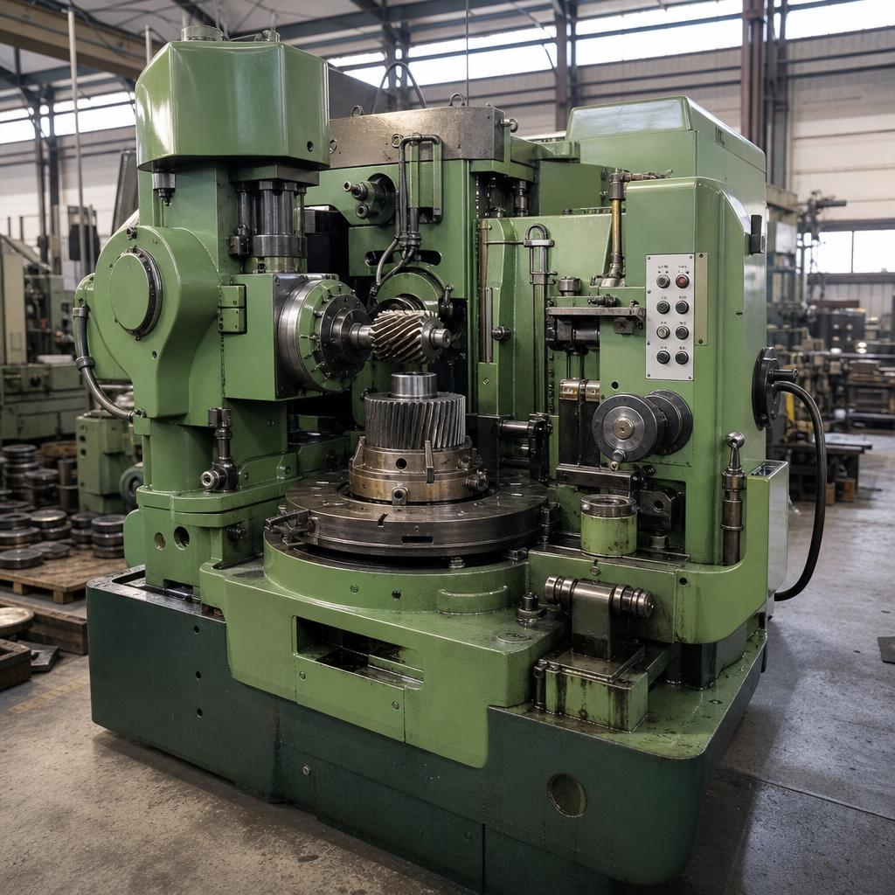
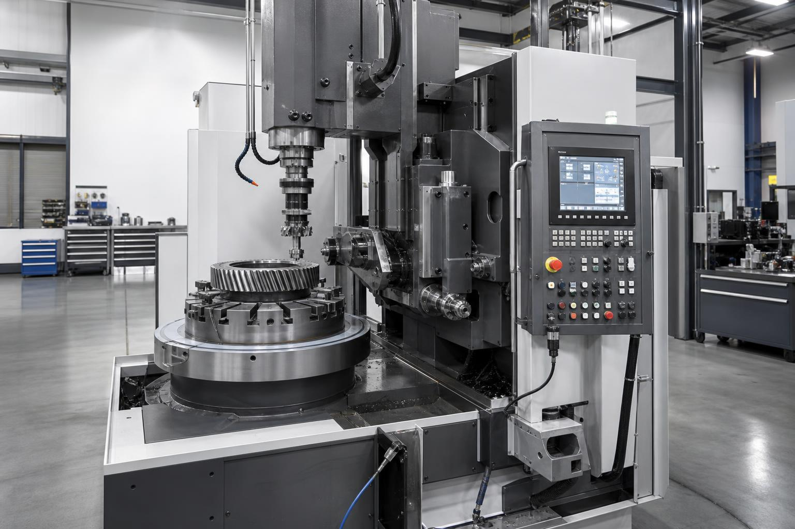
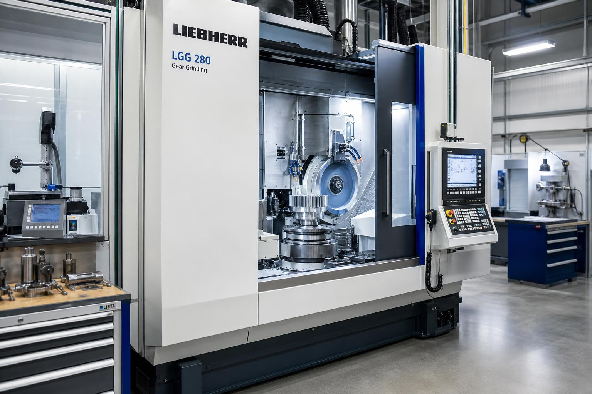
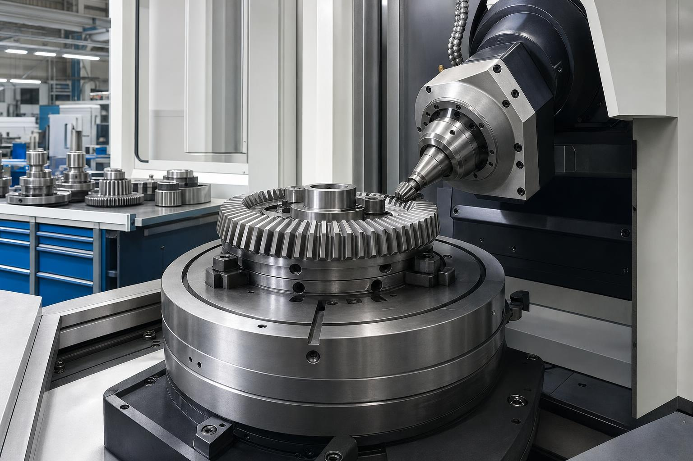
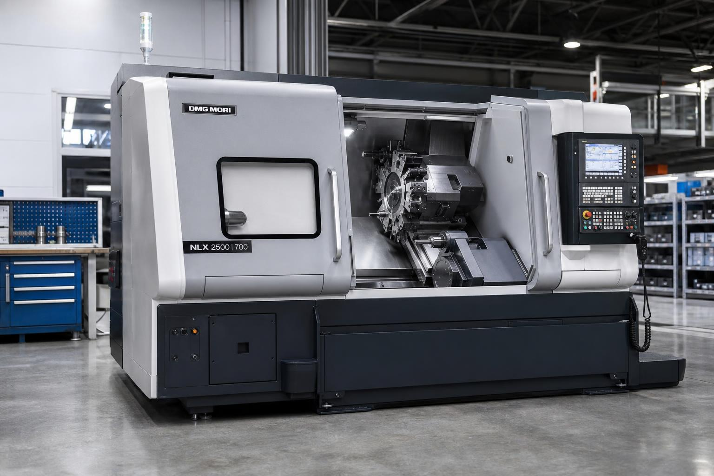
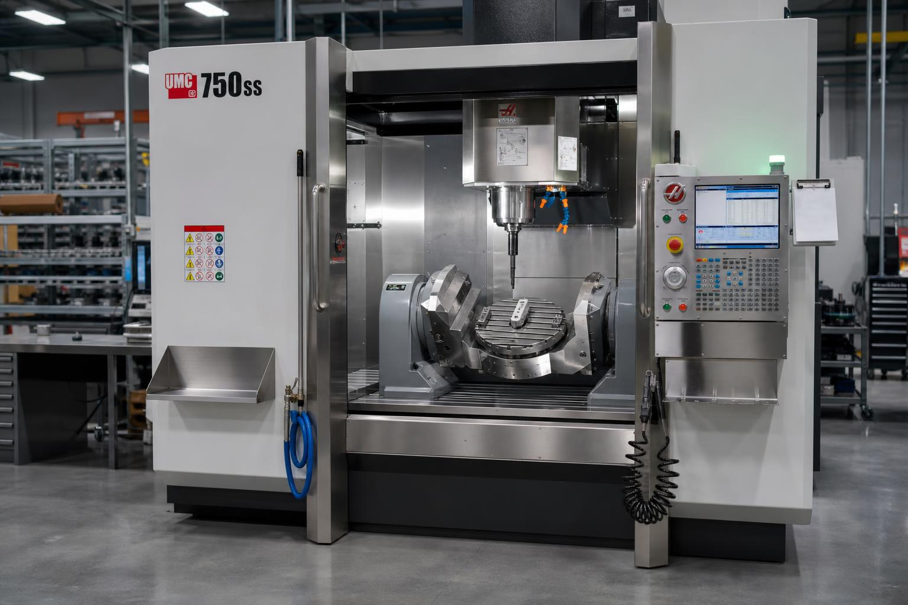
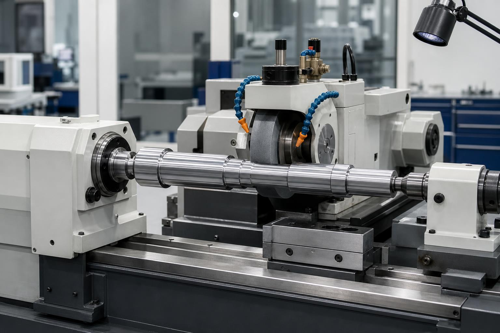
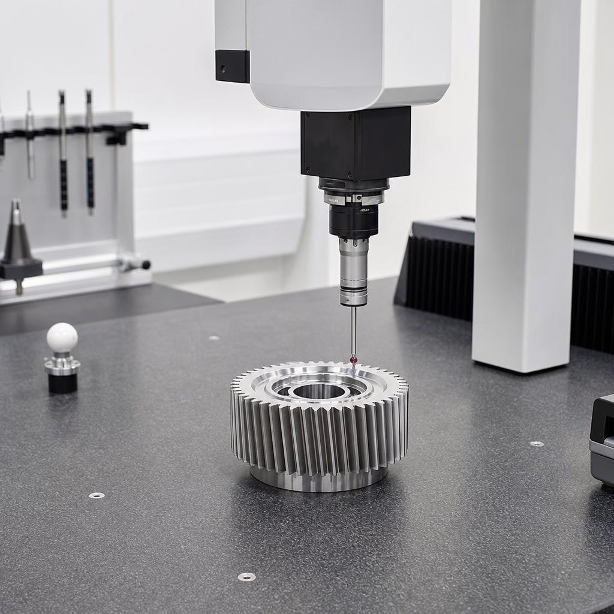

Циліндричні шестерні
- Зубофрезерування: прямозубі та косозубі (m0.4–14), діаметр до 800 мм
- Зубодовбання: зовнішнє та внутрішнє зачеплення (m0.3–12), діаметр до 1300 мм
- Зубошліфування: m0.5–4 (черв’ячний круг), m2–12 (конічний круг)
Склад верстатного парку для зубонарізання, шліфування, фрезерування та токарної обробки. Нижче — станки з описом їхнього призначення у виробництві шестерень.

Основна машина для серійного нарізання циліндричних коліс. Дає стабільний крок зуба та високу повторюваність у партіях.

Підходить для складної геометрії, де класичний хоббінг обмежений. Часто застосовується для ремонтних і нестандартних деталей.

Фінішна обробка робочих поверхонь зуба. Підвищує плавність ходу, знижує шум і покращує ресурс передачі.

Формує точний профіль конічних передач. Критичний для трансмісій, де важливий стабільний контакт і мінімальні вібрації.

Формує точні посадки та співвісність перед зубонарізанням. Основа геометричної точності для подальших операцій.

Дає гнучкість для нестандартних деталей та складних контурів. Зменшує кількість переустановок і ризик похибки.

Забезпечує точні діаметри та шорсткість. Впливає на ресурс підшипникових вузлів та якість збірки.

Підтверджує відповідність кресленню та техвимогам. Зменшує ризики браку перед відвантаженням клієнту.